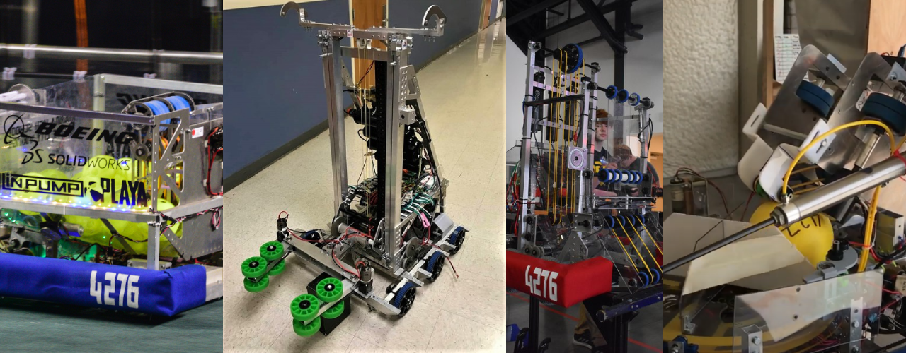

FRC
First Robotics Competition is a high school program which gives students 6 weeks to design, build, and program a robot based on a new game given each year.
FRC is where I found my love for programming and robotics. I started in 2017 learning java programming and basic circuits and use of tools and design. In 2019 I was lead of the wiring team, programmer, and driver of the robot where we went to world championships in houston to compete. In 2020, despite having the season cut short from the Corona Virus I was head of the programming and wiring team. All the code was done in java using the robot base FRC provides.